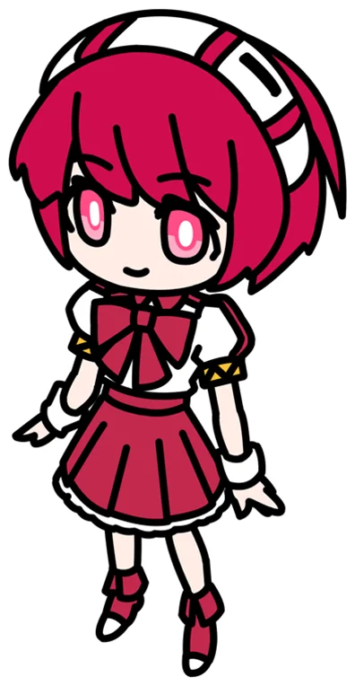

攻击1
防御0
生命8
主动真正的我冷却 2
恢复1点生命值，下次移动时，可以自由选择移动方向。 使用技能时，如果温暖（每层使自身防御力+1）已达到5层，则本回合使自身增加当前防御力的攻击力，随后消耗所有温暖（每层使自身防御力+1）。
PVE传送至一个友方角色的位置并为双方恢复1点生命值。本回合经过友方角色时，双方攻击力+1（无法叠加）。 使用技能时，如果温暖（每层使自身防御力+1）已达到5层，消耗所有温暖（每层使自身防御力+1），本回合自身增加当前防御力的攻击力。
被动交际花
恢复生命时，获得1层温暖（每层使自身防御力+1），最多叠加5层。 经过其他角色时，恢复双方1点生命值，并夺取目标1星币。
PVE恢复生命时，获得1层温暖（每层使自身防御力+1），最多叠加5层。 经过其他角色时，恢复双方1点生命值。
基础资料
姓名多萝西·海兹
英文名Dorothy Haze
日文名ドロシー·ヘイズ
从属组织赛博朋克酒保行动
上线时间2025-09-28
喜欢食物Piano Woman
初始骰子/
礼物/、/、/
徽章/、/
PVE 特性
- 达到1星时防御力+1
- 初始星币+6
- 达到3星时攻击力+1、防御力+1、移动速度+1
默认

共 8 个表情，点击可放大。
官方 wiki 没有这角色的 /获取 页，头像、名片、卡牌、骰子的完整清单暂缺；下方「档案」里保留了画廊中的零散素材。
人物传记
她虽然是Lilim(人造人)，但在任何场合她都是最敏锐的观察者之一。她用这份洞察力，通过讲述那些来自她工作中的离奇故事，来不断地撩拨和观察身边人的反应。她对社交的热情有多高，对狗的厌恶就有多深。
画廊其他素材

本地未收录该角色的语音台词。